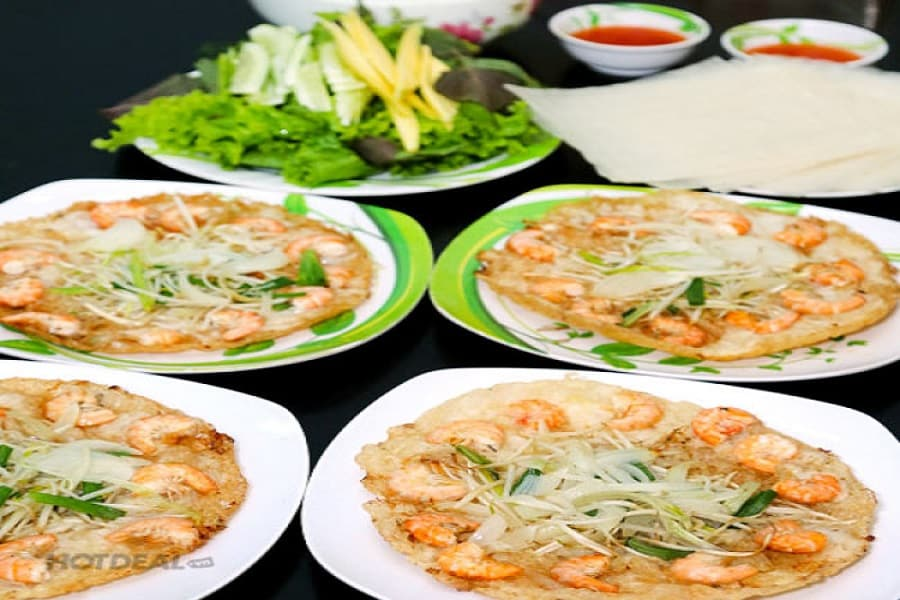
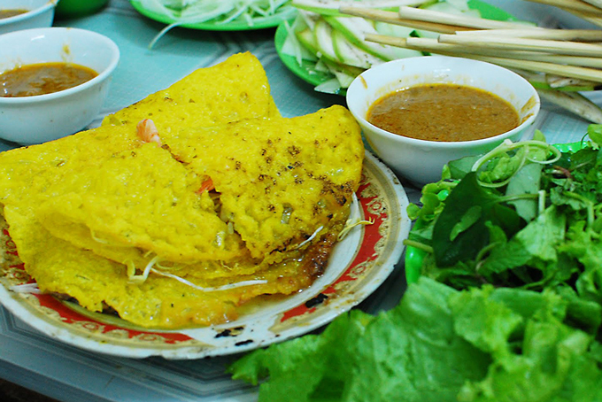

Đà Nẵng xinh đẹp giờ đây không chỉ thu hút khách du lịch bởi cảnh đẹp, bởi những nơi vui chơi giải trí nổi tiếng mà còn bởi ẩm thực. Nếu cảnh đẹp là nơi đưa du khách đến nơi đây thì ấm thực chính xác là điều níu chân khách ở lại. Nền ẩm thực phong phú, vừa dân dã lại tinh tế đến tuyệt vời chính là cảm nhận của thực khách về ẩm thực Đà thành. Trong số đó, bánh xèo Đà Nẵng là một trong những món ăn được thực khách nhắc đến nhiều nhất. Bánh xèo là món ăn dân dã và rất phổ biến tại Việt Nam được rất nhiều người yêu thích. Dù bạn ở đâu đi chăng nữa thì cũng rất dễ dàng có thể thưởng thức bánh xèo tại nhiều nơi trên mảnh đất Việt Nam. Nhưng hiếm có nơi nào bánh xèo lại mang đến cho người ăn được hương vị đặc biệt thơm ngon như bánh xèo tại Đà Nẵng. Vì lẽ đó, chúng tôi đã giúp bạn tìm kiếm những điều thú vị và tổng hợp cho bạn những thông tin cơ bản về bánh xèo xứ Đà thành. Từ đó bạn sẽ biết được đâu là lý do khiến bánh xèo trở thành một trong những lựa chọn hàng đầu của các tín đồ ẩm thực khi đến Đà Nẵng.

Không có một tài liệu nào chứng minh chính xác nguồn gốc của bánh xèo. Mỗi nơi sẽ có một câu chuyện riêng về nguồn gốc sinh bánh xèo và cứ thế truyền miệng từ đời này qua đời khác. Có câu chuyện kể rằng từ rất nhiều năm trước, khi mà dân ta còn thiếu gạo để ăn cho no bụng, nhiều người đã giã gạo ra thành bột rồi đổ vào khuôn ăn cho đỡ đói.
Dần dần món ăn này phổ biến hơn, nhiều người ưng ăn vì hợp vị. Khi đúc bánh nghe tiếng “xèo xèo” vui tai nên mọi người gọi đây là bánh xèo để cho dễ nhớ. Bánh xèo cứ dần dần quen thuốc hơn với mọi người, trở thành món ăn lạ miệng nhưng thơm ngon.Qua nhiều lần biến tấu, bánh xèo giờ đây thơm ngon hết sẩy với những vị thơm ngon đúng điệu. Ở từng vùng sẽ có cách đúc và ăn bánh xèo khác nhau. Tuy nhiên, chung quy lại thì vẫn luôn là chiếc bánh xèo vàng rụm, giòn tan với đầy nhân nào là tôm, thịt, giá đỗ,…
Bánh xèo giờ đây không đơn giản là món ăn dân dã chỉ để ăn chơi vào những ngày mưa không thể ra ngoài. Bánh xèo hiện giờ cùng với những biến tấu phù hợp của nó đã trở thành đặc sản của Đà Nẵng nói riêng và của ẩm thực Việt Nam nói chung.
Bánh xèo ở Đà Nẵng thường được người dân gọi là bánh xèo Miền Trung. Bởi bánh xèo tại Đà Nẵng có nhiều nét tương đồng về hình dáng và cách thức làm giống nhau trên toàn dải đất miền Trung. Nhưng bánh xèo Đà Nẵng khá khác nhau với các tỉnh thành khác từ hương vị đến hình dáng kích thước…..
Nếu bánh xèo miền Nam mang trong mình nét đặc trưng vì hình dáng khá to, vỏ mỏng nhìn đã mắt thì ngược lại bánh xèo miền Trung lại đã cái miệng với kích thước nhỏ gọn, chỉ khoảng bằng bàn tay người lớn. Thường bánh xèo miền Nam thường nhân được làm từ tôm, đậu xanh, giá … là những gia vị dễ kiếm và cũng dễ ăn ai cũng có thể ăn được. Khi ăn bạn cẩn thấy vỏ bánh giòn bên trong nhân thì có vị ngọt các loại hòa quyện với nhau. Còn Bánh xèo Đà Nẵng nhìn chung thì không khác nhiều so với bánh xèo Quảng Nam. Bột gạo sẽ được pha thêm chút bột nghệ vàng óng để khi chiên lên sẽ có màu vàng ương vô cùng đẹp mắt. Nhân bánh thường là tôm sông tươi ngon hay vài lát thịt ba chỉ béo ngậy, lại cho vào đó vài cọng giá mập mạp trắng tròn. Bánh xèo Đà Nẵng thường được đúc khá mỏng để đảm bảo độ giòn khi ăn.
Nước chấm của bánh xèo Đà Nẵng cũng khác hẳn so với những nơi khác. Nước chấm được làm từ gan heo là chủ yếu, cái vụ gan heo sẽ quyết định 50% hương vị của nước chấm. Mỗi nơi đều có một “bí quyết” pha chế nước chấm cho riêng mình, và các quán bánh xèo ở Đà Nẵng cũng vậy. Chúng có hương vị rất riêng, rất khó để diễn tả về hương vị của nước chấm một cách chính xác. Chỉ biết rằng cái vị đặc biệt của nó in sâu vào vj giác của từng thực khách đến nơi đây.
Bánh tráng để cuốn bánh xèo phải là loại thật mỏng, thật dai để có thể gói trọn bánh xèo và các loại rau đi kèm. Đĩa rau ăn kèm với bánh xèo cũng thật đa dạng và tươi ngon để thực khách có thể lựa chọn tùy ý. Thêm vào đó còn có xoài chua chua ngọt ngọt cùng chút dưa leo thái lát mỏng để ăn kèm cho đỡ ngán cũng như giúp tăng thêm hương vị cho bánh xèo. Thực khách sẽ không khỏi thích thú bởi một cuốn bánh xèo là sự kết hợp của nhiều màu sắc. Cái sắc vàng ươm của vỏ bánh cùng chút xanh của rau tươi ngon, lại điểm chút đỏ hồng của tôm,…tất cả tạo nên một cuốn bánh xèo vô cùng đẹp mắt. Mỗi cuốn bánh xèo đều béo ngậy, lại có vị chua cay ngọt bùi, cái vị giản dị mà nồng nhiệt như chính tinh thần hiếu khách của người dân đất Đà thành vậy.
Bánh xèo qua thời gian vẫn giữ được vị ngon vốn có của nó, đồng thời không ngừng biến tấu để trở nên ngon hơn. Nếu như bánh xèo trước kia được đúc khá dày với màu trắng thì giờ đây, những chiếc bánh xèo với đầy ắp nhân vàng rụm, giòn tan đã trở nên quen thuộc. Người đúc bánh xèo bây giờ chú ý đúc bánh thật mỏng để khi chín bánh sẽ thật giòn, như vậy ăn sẽ ngon hơn.
Thêm vào đó, nếu như trước khi bánh xèo không có nhân hay chỉ có vài lát thịt mỏng thì bây giờ, nhân bánh xèo đã phóng phú vô cùng. Chủ yếu vẫn là nhân tôm, thịt kèm chút giá đỗ mập mạp nhìn thật đẹp mắt. Bên cạnh đó, ở nhiều nơi đã đúc bánh xèo nhân nấm, hay là bánh kèo với thật nhiều loại hải sản khác nhau như mực, bạch tuộc,… Nhân bánh khác nhau sẽ có thể đáp ứng tốt nhất khẩu vị riêng của từng thực khách. Nước chấm qua thời gian cũng được đầu tư để chế biến sao cho có vị thơm ngon và đặc trưng nhất có thể. Mỗi người đúc bánh xèo lâu năm sẽ từ bát nước chấm bình dân xưa kia sẽ chế biến ra nước chấm của riêng mình. Và thực tế ngày nay, nước chấm chính là một trong những lý do chính quyết định độ ngon của bánh xèo và ảnh hưởng đến độ nổi tiếng của quán.
Địa chỉ quán ăn
Bánh xèo Bà Dưỡng: 280/23 Hoàng Diệu, quận Hải Châu, Đà Nẵng.
Bánh xèo Lipton: 280/21 Hoàng Diệu, quận Hải Châu, thành phố Đà Nẵng.